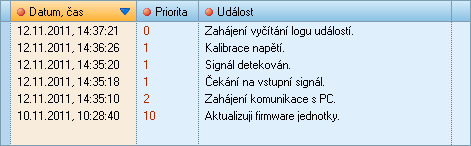

V okně Události zařízení je možné načíst seznam události z paměti zařízení - regulátoru či BMS. Události informují o důležitých stavech zařízení, jako je např. aktualizace firmware, průběh inicializace zařízení, průběh nabíjení, chybové stavy zařízení, změny v nastavení zařízení apod.
Seznam funkcí pro práci s událostmi:
|
Naèíst události |
Tlaèítko spustí naèítání událostí z pamìti regulátoru èi BMS. Celková doba naèítání závisí pøedevším na množství událostí uložených v pamìti zaøízení, a naèítání proto mùže trvat delší dobu.
|
Vymazat data |
Vymaže všechny události z tabulky. Tlaèítko se aktivuje až po zahájení naèítání událostí.
|
Uložit data |
Uloží všechny události do souboru ve formátu XLS (soubor lze zobrazit pomocí aplikace Microsoft Excel nebo LibreOffice). Seznam událostí se do souboru ukládá ve stejném poøadí, v jakém je aktuálnì zobrazen v tabulce. Tlaèítko se aktivuje až po zahájení naèítání událostí.
Tabulka událostí
V tabulce je uveden seznam událostí načtených ze zařízení. Každá událost obsahuje tyto parametry: Datum a čas kdy událost nastala, Priorita (důležitost události) a Událost (textový popis události).

Pøi naètení událostí je tabulka seøazena podle data a èasu sestupnì (první událost v tabulce je nejnovìjší).
Seøazení tabulky lze libovolnì mìnit, a to poklepáním na záhlaví pøíslušného sloupce. Sloupec, podle kterého je tabulka seøazena, je oznaèen výrazným podbarvením. Opakovaným klepnutím na záhlaví sloupce lze pøepínat mezi sestupným a vzestupným øazením tabulky. Takto je možné øadit tabulku podle všech parametrù: podle data a èasu, podle priority i textu události.